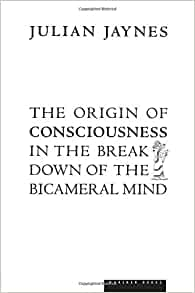
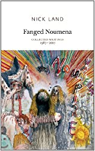

Jaynes, Julian: The Origin of Conciousness in the Breakdown of the Bicameral Mind | 978-0618057078

Land, Nick: Fanged Noumena | 978-0955308789
Guattari, Felix: The Machinic Unconcious: Essays in Schizoanalysis | 978-1584350880
Lipkin, Harry J: Lie Groups for Pedestrians | 978-0486421858
Rothbard, Murray N: For a New Liberty: The Libertarian Manifesto
Chomsky, Noam: Language and Mind
Fanon, Frantz: Black Skin, White Masks
Diop, Chiekh Anta: Civilization or Barbarism: An Authentic Anthropology

Lyotard, Jean-Francois: The Postmodern Condition: A Report on Knowledge

Rand, Ayn: The Romantic Manifesto

Davidson, James Dale & Rees-Mogg, Lord William: The Sovereign Individual Mastering The Transition To The Digital Age

Jackson Isaiah: Bitcoin and Black America